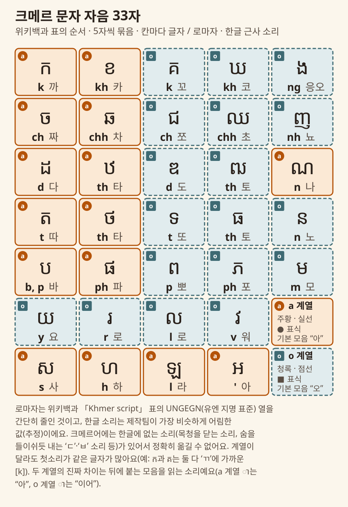
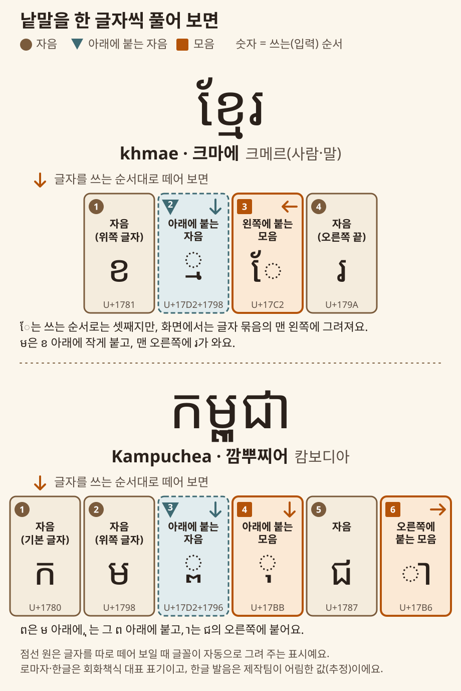

Day 7자음만 33개 — 크메르 문자는 어떻게 생겼을까
오늘의 질문: 자음을 위아래로 쌓고 모음을 둘레에 붙이는 이 글자도 한글처럼 '모아쓰는' 문자일까요?읽는 시간 약 9분·언어
- 자음 글자는 33개이고, 자음 글자 하나에 기본 모음(아 또는 오)이 들어 있어요.
- 모음 기호는 자음의 왼쪽·위·아래·오른쪽에 붙고, 겹친 자음은 앞 자음 아래에 작게 붙어요. 한글처럼 음절을 한 덩어리로 모아 쓰지만, 자음을 아래로 쌓는 점이 달라요.
- 낱말 사이를 보통 띄지 않고 왼쪽에서 오른쪽으로 써요. 오늘은 ខ្មែរ(크메르)와 កម្ពុជា(캄보디아) 두 낱말만 알아봐요.
표시가 없는 숫자는 확인된 값이에요. 자료마다 다르거나 어림한 값에만 추정·논쟁 있음을 붙였어요.
어제 퀴즈 정답 1번 X · 2번 ③ · 3번은 단톡방에서 이야기해요
카드로 보기
카드를 누르면 크게 볼 수 있어요.


간판 위의 글자는 어디서 왔을까
프놈펜 거리에서 가게 간판을 올려다본다고 떠올려 보세요. 한 줄로 적힌 글자 가운데 어떤 글자는 다른 글자 아래에 작게 붙어 있고, 어떤 기호는 글자의 왼쪽이나 위에 앉아 있어요. 캄보디아 사람들이 자기 말을 적는 크메르 문자예요. 오늘은 이 글자를 다 읽는 대신, 어떤 원리로 짜여 있는지만 알아봐요.
크메르 문자는 남인도에서 온 팔라바 문자를 바탕으로 만들어졌고, 뿌리는 브라흐미 계열(옛 인도 글자의 큰 갈래)이에요. 인도에서 건너온 글자를 바탕으로 크메르어에 맞게 고쳐 쓰면서 이어 온 글자예요.
연대가 적힌 크메르어 비문 가운데 가장 오래된 것은 앙코르 보레이에서 나온 611년의 비문(돌에 새긴 글)이에요. 그보다 앞서 이 글자를 썼을 수도 있으니, "611년에 생겼다"는 뜻은 아니에요. 옛 비문부터 이어져 온 이 글자를 캄보디아 사람들은 지금도 쓰고 있어요.
쓰는 방향은 한글처럼 왼쪽에서 오른쪽이에요. 다만 크메르 문자는 보통 낱말 사이를 띄지 않고 이어 써요. 띄어쓰기는 구나 문장이 끝나는 자리, 영어로 치면 쉼표쯤 되는 곳에서 해요. 간판 글자가 길게 한 덩어리로 이어져 보인다면 이 때문이에요.
글자를 알아보는 세 가지 열쇠
글자를 알아보는 열쇠는 세 가지예요. ① 자음에 딸린 기본 모음과 두 계열, ② 사방에 붙는 모음 기호, ③ 아래에 작게 붙는 자음이에요. 먼저 자음 글자는 33개예요(옛 글자 2개를 더하면 35개).
열쇠 1. 자음에 딸린 기본 모음과 두 계열
크메르 문자는 아부기다(자음 글자에 모음이 딸려 있는 문자)예요. 자음 글자 하나에 기본 모음(아 또는 오)이 들어 있고, 다른 모음은 기호를 덧붙여 나타내요. 그리고 자음은 두 무리, a 계열과 o 계열로 나뉘어요.
같은 모음 기호라도 어느 무리의 자음에 붙느냐에 따라 읽는 소리가 달라져요. ការ(일·업무)는 a 계열 ក에 ា가 붙어 "까아"로 읽어요(끝의 រ는 이 낱말에서 소리 나지 않아요). ជា는 o 계열 ជ에 같은 ា가 붙어 "찌어"로 읽어요. 이 ជា는 잠시 뒤 '캄보디아' 낱말의 끝에서 다시 만나요.
그림 1에서 칸이 두 가지 색으로 나뉜 것이 바로 이 두 무리예요.

로마자는 위키백과 「Khmer script」 표의 UNGEGN(유엔 지명 표준) 열을 간단히 줄인 것이고, 한글 소리는 제작팀이 가장 비슷하게 어림한 값 추정이에요. 한글에 없는 소리가 있어서 정확히 옮길 수 없어요. ក과 គ처럼 계열이 달라도 첫소리가 같은 글자가 많아요(둘 다 'ㄲ'에 가까운 k 소리).
열쇠 2. 사방에 붙는 모음 기호
모음 기호는 자음의 왼쪽·위·아래·오른쪽, 때로는 둘레를 감싸며 붙어요. 그래서 소리 나는 순서와 눈에 보이는 자리가 다를 때가 있어요. ខ្មែរ(khmae, 크마에)에서 모음 기호 ែ는 소리로는 ម 뒤에 오지만, 화면에서는 자음 묶음의 왼쪽에 그려져요(여기서도 끝의 រ는 소리 나지 않아요). 우리가 '크메르'라고 부르는 이 낱말의 현지 발음은 '크마에'에 가까워요(한글 발음은 근사치예요).
모음 기호는 열여섯 개예요(유니코드, 곧 컴퓨터가 글자를 구별하는 국제 규격 기준). 다만 같은 기호가 계열에 따라 두 소리를 내는 것까지 따로 세면 스무 개를 훌쩍 넘어서, 자료마다 모음 수가 달라요 논쟁 있음.
열쇠 3. 자음 아래에 작게 붙는 자음
자음이 겹치면 뒤의 자음은 앞 자음 아래에 작게 붙어요. 묶음의 첫 자음은 본래 모양 그대로 써요. 유니코드에서는 이렇게 쓰라는 보이지 않는 표시를 따로 두는데, 크메르어로 '발'이라는 뜻의 낱말로 불러요. 33자 가운데 ឡ 하나만 아래에 붙는 모양이 없어요.
ខ្មែរ에서는 ម이 ខ 아래에 붙어요. កម្ពុជា(Kampuchea, 깜뿌찌어)에서는 ព이 ម 아래에 붙고, 그 아래에 모음 기호 ុ가 놓여요. 맨 끝은 열쇠 1에서 본 ជា예요.
오늘의 목표는 여기까지예요. 간판에서 아래에 작게 붙은 자음과 왼쪽에 앉은 모음 기호를 알아보고, ខ្មែរ와 កម្ពុជា 두 낱말을 찾아낼 수 있으면 충분해요. 규칙을 다 외우지 않아도, 원리를 알고 보면 같은 간판이 다르게 보일 거예요.
자음표로 해 보는 놀이
자음표에서 내 이름의 첫소리와 가까운 글자를 찾아보는 놀이예요. 한국어 이름을 크메르 문자로 적는 공식 표기법을 우리 제작팀은 확인하지 못했어요. 그래서 이 글자는 "내 이름을 크메르어로 쓴 것"이 아니라 "소리가 비슷한 글자 하나"예요. 이름 전체를 크메르 문자로 쓰고 싶다면 현지 친구에게 물어보세요.
이름이 'ㅅ'으로 시작한다면 그림 1에서 '사'로 적힌 글자를 찾아보세요. 비슷한 글자가 둘이면 아무거나 골라도 돼요(예: 'ㅈ'은 ច이나 ជ). 딱 맞는 글자가 없는 소리도 있어요. 한 글자만 골라 보는 데까지가 오늘의 놀이예요.
한글과 닮은 점, 다른 점
한글도 ㄱ, ㅏ, ㅇ을 모아 '강'이라는 한 덩어리로 쓰죠. 크메르 문자도 글자를 음절 단위로 한 덩어리로 묶어 보이게 한다는 점에서 모아쓰기와 닮았어요. 다만 한글은 자음·모음이 각각 한 글자씩인 음소 문자이고, 크메르 문자는 자음 글자에 기본 모음이 들어 있어 다른 모음은 기호로 덧붙여요. 한글은 자음과 모음을 네모 칸 하나에 모아 쓰고, 크메르 문자는 자음을 아래로 쌓고 모음 기호를 둘레에 붙여요.
숫자도 크메르 모양이 따로 있어서, 0부터 9까지 열 개가 아라비아 숫자와 다르게 생겼어요.
| 크메르 숫자 | ០ | ១ | ២ | ៣ | ៤ | ៥ | ៦ | ៧ | ៨ | ៩ |
|---|---|---|---|---|---|---|---|---|---|---|
| 아라비아 숫자 | 0 | 1 | 2 | 3 | 4 | 5 | 6 | 7 | 8 | 9 |
기네스 세계 기록 사이트는 크메르어를 '글자가 가장 많은 언어'로 올리고 74자(지금은 쓰이지 않는 것 포함)라고 적어요. 어떻게 센 숫자인지는 밝혀져 있지 않아요 논쟁 있음. 자음 글자와 거기에 붙이는 모음 기호를 따로 세는 문자라서, 세는 방식에 따라 글자 수가 많아 보이는 면이 있어요.
소리 쪽에서도 하나 알아 두면 좋아요. 크메르어는 태국어·베트남어와 달리 성조(소리의 높낮이로 뜻을 구별하는 것)가 없다고 설명돼요.
| 항목 | 내용 | 확신도 | 출처 |
|---|---|---|---|
| 문자의 뿌리 | 남인도 팔라바 문자를 바탕으로 함, 뿌리는 브라흐미 계열 | 확실 | Wikipedia Khmer script, Omniglot |
| 가장 오래된 연대 기록 | 연대가 적힌 크메르어 비문 가운데 가장 오래된 것: 앙코르 보레이, 611년 | 확실 | Wikipedia Khmer script, Omniglot |
| 자음 글자 | 33개(옛 글자 2개를 더하면 35개) | 확실 | Wikipedia Khmer script, 한국어 위키백과 |
| 자음의 두 계열 | a 계열·o 계열. 같은 모음 기호도 계열에 따라 다르게 읽음(예: ការ 까아, ជា 찌어) | 확실 | Wikipedia Khmer script, Omniglot, Wiktionary |
| 모음 기호 | 16개(유니코드 기준). 모음 전체 수는 세는 방식마다 다름 | 16개 확실 / 전체 수 논쟁 있음 | Wikipedia Khmer script, Alan Wood's Unicode Resources |
| 아래에 붙는 자음 | 겹친 자음은 앞 자음 아래에 작게 씀(ឡ만 그 모양이 없음) | 확실 | Wikipedia Khmer script |
| 쓰는 방식 | 왼쪽에서 오른쪽, 보통 낱말 사이를 띄지 않고 구·문장 끝에서 띔 | 확실 | Wikipedia Khmer script, Omniglot, 한국어 위키백과 |
| 숫자 | ០~៩ 열 개 | 확실 | Wikipedia Khmer numerals, Alan Wood's Unicode Resources |
| 성조 | 표준 설명에서는 성조가 없음 | 확실 | Wikipedia Khmer language |
| 기네스 기록 | '글자가 가장 많은 언어', 74자(세는 법 밝히지 않음) | 논쟁 있음 | Guinness World Records |
프놈펜에서 만나면
- 오늘 바로: ខ្មែរ나 កម្ពុជា 낱말 눈에 익히기. 그림 2에서 아래에 붙은 자음과 왼쪽·오른쪽의 모음 기호를 짚어 보며 두 낱말의 모양을 기억해 두세요. 현지 간판이나 책 표지에서 찾으면 단톡방에 인증해 봐요.
- 간판에서 아래에 붙은 자음 찾기. 글자 아래에 작게 붙은 자음을 하나 찾아보세요. 읽지 못해도 "여기서 자음이 겹쳤구나" 하고 알아보는 것만으로 충분해요. 우리 제작팀의 권고예요.
- 이름은 현지 친구에게 부탁하기. 아래 한마디로 내 이름을 소개한 뒤, 이름을 크메르 문자로 써 줄 수 있는지 물어보세요. 정식 표기는 그 말을 쓰는 사람에게 배우는 것이 가장 정확해요. 우리 제작팀의 권고예요.
오늘의 크메르어 한마디
ខ្ញុំឈ្មោះ …
knyom chmuah …
크뇸 츠무어…
제 이름은 …예요. ខ្ញុំ(크뇸)는 '나, 저', ឈ្មោះ(츠무어)는 '이름'이라는 뜻이고, 자기소개할 때 이름 앞에 붙여 말해요.
한글 발음은 추정이에요. ឈ្មោះ의 끝에는 숨을 살짝 내쉬는 소리가 있어서 한글 '츠무어'에 다 담지 못했어요.
오늘의 퀴즈
- OX크메르 문자는 한글처럼 낱말 사이를 띄어 써요. (O / X)
- 객관식크메르 문자에 대한 설명으로 맞는 것은?
- ① 오른쪽에서 왼쪽으로 써요.
- ② 모음 기호는 늘 자음의 오른쪽에만 붙어요.
- ③ 현대 크메르어는 자음 글자 33개를 써요.
- ④ 자음이 겹치면 뒤의 자음은 앞 자음 위에 붙어요.
- 생각해 볼 질문정답은 없어요. 현지 친구가 내 이름을 크메르 문자로 써 준다면, 답례로 그 친구에게 한글로 무엇을 써 주고 싶나요?
정답은 이 쪽 맨 끝에 있어요
더 알아보기
- 내일(Day 8): 「1년에 두 번 방향을 바꾸는 강 — 메콩, 톤레삽, 그리고 우기와 건기」. Day 1 지도에서 잠깐 만난 그 강을 따라가 봐요.
- 이번 주에 만난 것: 국기와 지도 → 아목과 프라혹 → 건국 신화와 푸난 → 압사라와 보카토르 → 앙코르와트 → 자야바르만 7세 → 크메르 문자.
- 한국어로 더 읽고 싶다면: 한국어 위키백과, 크메르 문자 (KO)
- 모음 기호 표를 더 보고 싶다면: Omniglot, Khmer (Cambodian) language and alphabet (EN)
확신도 표시 범례
- 확실 공신력 있는 출처 둘 이상이 일치하거나, 헌법·공식 통계 같은 1차 자료로 확인한 내용. 본문에서는 따로 표시하지 않고 표 2에 적었어요.
- 추정 믿을 만하지만 2차 자료나 추계에 기대고 있어, 자료나 시점에 따라 달라질 수 있는 내용
- 논쟁 있음 출처끼리 수치나 해석이 갈려 범위로 쓰거나 여러 견해를 함께 소개한 내용
퀴즈 정답
눌러서 정답 보기
1번 X. 크메르 문자는 보통 낱말 사이를 띄지 않고 이어 쓰고, 구나 문장이 끝나는 자리에서 띄어요. 한글과 반대라서 헷갈리기 쉬워요. 「간판 위의 글자는 어디서 왔을까」 끝 문단에 나와요.
2번 ③. 자음 글자는 33개예요(옛 글자 2개를 더하면 35개). 쓰는 방향은 왼쪽에서 오른쪽이고, 모음 기호는 사방에, 겹친 자음은 아래에 붙어요. 「글자를 알아보는 세 가지 열쇠」에 나와요.
3번 정답 없음. 이름을 주고받는 것은 서로의 글자를 배우는 작은 시작이에요. 써 주고 싶은 낱말 하나를 단톡방에 남겨 봐요.